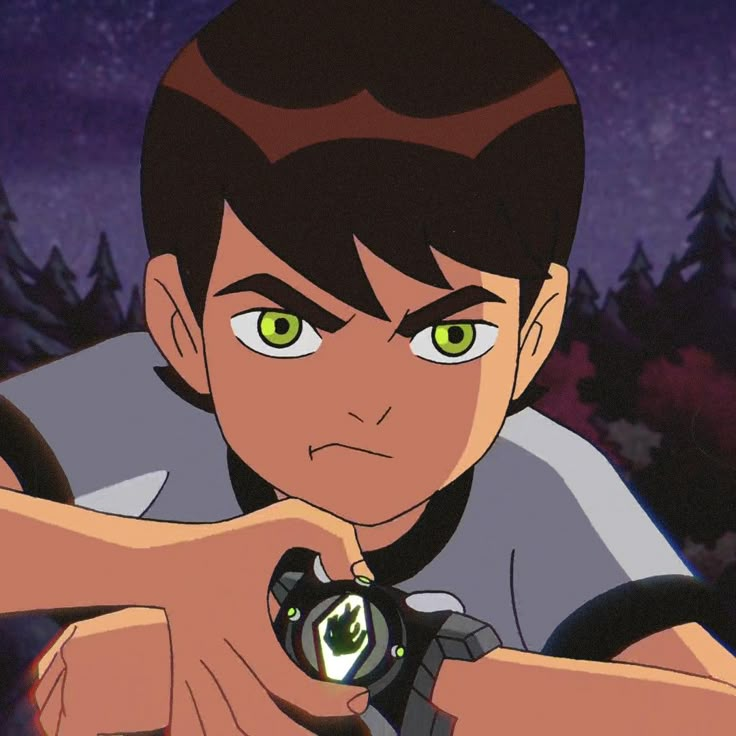

Filme de Animação Favorito
Gostou dos efeitos neon e da música de Carros? Achei que se esse modo escuro fosse ter música e brilho, devia começar com o filme que me deu a ideia para fazer isso, Carros, meu filme favorito de animação.


Desenho Favorito
Já que falei de animação, por que não falar do meu desenho favorito? Eu gosto de diversos desenhos que eu assisti quando eu era menor, mas acho que Ben 10 era o que eu mais gostava, eu já cheguei a ter bonecos, óculos, shorts, camisa, estojo e até lápis do Ben 10, além disso, um Omnitrix de brinquedo, gostava pouco ou não?
Trilogia Star Wars
Acho que Star Wars também é um dos filmes mais legais que já vi, as lutas com sabres de luz são muito boas de se ver, e, para mim, o terceiro filme tem as melhores lutas e também a minha favorita, Obi-Wan x Anakin, o mestre contra o aprendiz.


Sobre Futebol
Saindo um pouco da área cinematográfica e entrando na do futebol, curto assistir jogos de futebol, hoje nem tanto por conta da situação deplorável do meu time, é ruim de assistir. E claro, jogo um fifa ou pes de vez em quando, quem acha que esses jogos são perda de tempo está certo, errado estou eu que jogo. E eu sei de uma coisa, todos já quiseram ser algum jogador um dia, eu já quis ser esse cara da foto aí.